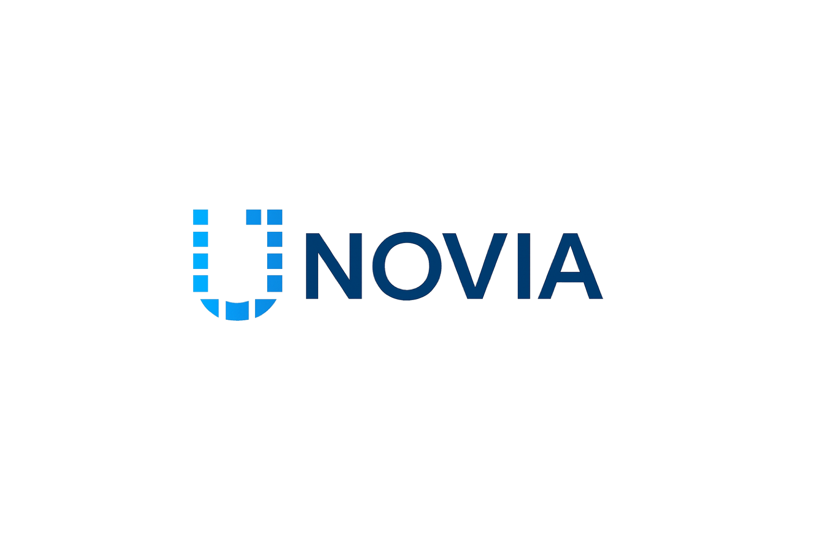

Pick the step that hurts most
I sit with the team, find where time, money or good customers are being lost, and choose the one change that will make the biggest difference first.
Enterprise AI Transformation
I build AI into how businesses already work, from hiring to daily operations, and stay with the team until they actually use it.
ScrollIntroduction
Most businesses I meet are not short of AI tools. They are short of time, people and processes that hold up when things get busy.
So I start with the work: where it slows down, who it depends on, and what fixing it is worth. Then I bring in AI where it genuinely helps, and keep people in charge of the decisions that need a person. That approach is behind Unovia Technologies and every product we have built.
Enterprise AI Transformation
Every AI project I have shipped started with watching how a team really works, then fixing one slow, painful step. I keep people in charge of the decisions, let AI take the repetitive work, and measure whether it helped before rolling it out further.
I sit with the team, find where time, money or good customers are being lost, and choose the one change that will make the biggest difference first.
I map the job as it is actually done today, then agree with the team which parts stay with people, which parts AI should help with, and which can safely run on their own.
I build the working system, test it on real work with numbers we agreed up front, and only then roll it out to more teams, staying close until it is how they work.
How the work is done today, where it gets stuck, and what fixing it is worth.
The new way of working, with people making the calls that matter.
A working version on real work, judged on numbers agreed before it starts.
To more teams once it works, reusing what we learned the first time.
Case Study · 1159 Realty
How a hiring bottleneck I saw first-hand became an AI-assisted workflow, then a standing practice, then Vera.
At 1159 Realty, first-stage hiring stalled: piles of CVs, hours of screening calls, and strong candidates lost in the queue while the HR team carried everything else.
I mapped where the time actually went and redesigned the step: AI screens every CV and runs the first-stage voice interview, and the hiring manager reviews the evidence and makes every decision.
On a live accountant vacancy, 34 applicants were narrowed to 4 human interviews, 2 of them strong fits.
It became how that HR team hires, with 179 candidates screened and 66 interview reports to date. I then scaled the same workflow, as Vera, to about 10 HR teams at employers and recruitment agencies.
“It has taken a lot of stress off me.”
“Vera reviews their applications, schedules them for an interview and also does the interview. I just get to review the interview and pick the best candidate.”
What I'm Building
A technology company building practical AI for how businesses work, hire and serve people.

Parent company AI products used by real businesses every day. Visit unovia.aiProducts
In a customer's words · Lana
How House12 uses Lana to manage members, payments and workspace operations. Olusoji Oyawoye, House12 See LanaAI Engineer in Nigeria
Looking for an AI engineer in Nigeria? I design, build and deploy AI agents that answer customers, qualify leads and take repetitive work off your team, built around how Nigerian businesses actually operate.
Agents that reply on WhatsApp, Instagram, email and your website around the clock, answer from your own prices, policies and FAQs, and hand sensitive conversations to a person.
Agents that respond to every enquiry in seconds, ask the right questions, book calls or inspections and pass qualified leads to your sales team, so ad spend stops leaking.
Agents that read documents, update spreadsheets and CRMs, chase approvals and draft reports, taking hours of repetitive work off small, stretched teams.
Agents connected to payment platforms such as Paystack or Flutterwave that confirm orders, share payment links, give delivery updates and send polite reminders before invoices go stale.
Private assistants grounded in your SOPs, product documents and policies, so staff get accurate answers without waiting for the one person who knows.
Screening, scheduling and candidate communication agents, built on the same thinking behind Vera, with people keeping the final hiring decision.
We pick one workflow where speed, volume or cost hurts most, and agree what success looks like in naira and hours.
I build a working agent on your real questions and data, so you can test it before a full rollout.
The agent goes live on your channels with guardrails, human handoff and data protection designed in.
We review conversations and numbers, close gaps and move to the next workflow once the first one pays its way.
Product Articles
Notes on the AI products I am building, plus practical guides to AI agents in Nigeria.
Inside Unovia's thesis: practical intelligence for customer service, team operations, careers and hiring.
Read the cover storyGuides
Timeline
Music, real estate and technology each became a different classroom for building.
Pal Bass Academy
Pal Bass Academy was a music education platform that reached students in more than 35 countries. It started with a passion for music but became my first experience of building a product, teaching a global audience and growing a digital community.
Real Estate
As Head of Sales at 1159 Realty, I built and led a sales team that generated billions of naira in sales. Real estate taught me how to sell, lead, negotiate and understand the decisions people make around money, security and opportunity.
Technology
Missed enquiries. Repetitive tasks. Expensive processes. Small teams carrying too much responsibility. I became interested in how artificial intelligence could solve these problems in a practical way. That curiosity became Unovia Technologies.
Enterprise AI
As Business Development Manager at 1159 Realty, I worked with executive and HR leadership to redesign hiring around AI, then supported adoption until it became the team's standing practice. That became the model I now use with other organisations: start from the real workflow, keep people in charge of decisions, measure the result, then scale.
Speaking
I am a TEDx speaker with talks on entrepreneurship, artificial intelligence, sales and leadership, drawn from my own experience building across real estate and technology.
Looking for a speaker for your next event? Get in touch and let's talk about what I can bring to your audience.
Lions Path Initiative
I am the convener of Lions Path Initiative, a private community of men committed to accountability, support and personal development.
The community exists to create space for honest conversations, meaningful relationships and shared growth. It is built around the belief that men become stronger when they have the right people around them.
News & Stories
Coverage of the work, from the newsroom.
Featured
The important public moments live here: the TEDx talk, the AI lecture, newspaper features and a hall of fame from the journey.
Societal Contributions
I serve as a Global Change Ambassador, contributing to conversations and initiatives focused on leadership, youth development and positive social impact.
Read the FeatureI convene a private community of men committed to accountability, support, honest conversations and shared personal development.
Explore Lions PathFAQ
Straight answers to the questions business owners ask before hiring an AI engineer.
Pal Wabuson is an AI engineer and entrepreneur in Nigeria, and the founder of Unovia Technologies, the company behind the AI products Amber, Lana, Iris and Vera. Pal designs and builds AI agents for businesses, speaks on artificial intelligence and entrepreneurship as a TEDx speaker, and previously led a real estate sales team that generated billions of naira in sales.
Yes. I work with founders, SMEs and established companies to design, build and deploy AI agents for customer support, sales, operations and HR. Send a short note about the workflow you want to improve to hello@palwabuson.com, or read how I work with businesses as an AI engineer in Nigeria.
AI agents add profit in four main ways: they capture leads that would otherwise go unanswered, especially at night and on weekends; they respond in seconds, which lifts conversion; they take repetitive work off your team so people can focus on selling and serving; and they reduce leakage from slow follow-up on orders and payments. Start with the workflow where missed messages or manual work already costs you money. Read the full guide: how AI agents can profit your business in Nigeria.
Start with one clear job, such as answering WhatsApp enquiries or booking appointments. Map how that work is done today, choose the channel your customers already use, connect the agent to your real information and tools, set rules for when it must hand over to a person, and test it on real conversations before launch. Nigerian businesses also need to plan for dollar-priced AI services, unreliable power and connectivity, local languages and the Nigeria Data Protection Act 2023. The step-by-step version is in how to build AI agents in Nigeria.
It depends on the job, the channels and the systems the agent must connect to. A focused agent for one workflow costs far less than a company-wide system. Budget for three things: the build, running costs such as AI model usage and WhatsApp messaging fees, which are often billed in dollars, and ongoing improvement. Every project should be scoped against a measurable result before you commit.
Look for someone who has shipped AI products that real customers use, understands your business model and not only the technology, designs for Nigerian realities such as WhatsApp-first customers and data protection law, and can show how success will be measured. Be wary of anyone who promises an agent will fully replace your staff or cannot explain ongoing costs. See the full checklist in how to hire the best AI engineer in Nigeria.
It should not be designed to. The strongest results come from agents that handle repetitive, high-volume work while people handle judgement, relationships and exceptions. A good agent knows when to hand a conversation to a human, and your team gets more time for the work that grows the business.
Yes. I work with businesses in Nigeria and internationally, and projects can be delivered remotely, so location is rarely a barrier.
Contact
For AI agent projects, speaking engagements, partnerships, media enquiries or conversations around business and innovation, start a conversation.